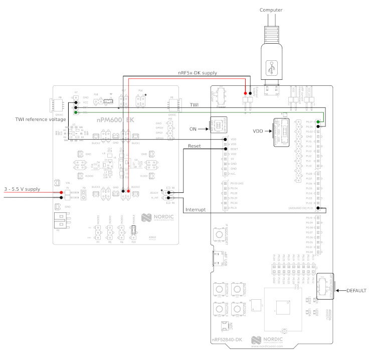

nPM6001 EK
概述
此示例用于测试 nPM6001 EK。该示例提供一个 shell 接口，可以测试 nPM6001 PMIC 提供的多种功能，包括：
稳压器（BUCK0/1/2/3 和 LDO0/1）
GPIO
看门狗
要求
该扩展板需要接到支持 Arduino 连接器的主机开发板。下面是 nRF52840 DK 的接线示例：

构建与运行
该示例设计为可在任何平台上运行。例如，为 nRF52840 DK 构建时，可以使用以下命令：
west build -b nrf52840dk/nrf52840 samples/shields/npm6001_ek
注意，此示例会自动将 SHIELD 设置为 npm6001_ek。烧录后，应启动进入 shell 接口。提供了 npm6001 命令用于测试 PMIC。下面是各子命令的详细信息。
稳压器
npm6001 shell 接口提供 regulator 子命令，用于测试 PMIC 中集成的稳压器（BUCK0/1/2/3 和 LDO0/1）。下面是一些命令示例。
# list all the available regulators
npm6001 regulator list
BUCK0
BUCK1
BUCK2
BUCK3
LDO0
LDO1
# list all the supported voltages by BUCK2
npm6001 regulator voltages BUCK2
1200 mV
1250 mV
1300 mV
1350 mV
1400 mV
# enable BUCK3
npm6001 regulator enable BUCK3
# disable BUCK3
npm6001 regulator disable BUCK3
# set BUCK3 voltage to exactly 3000 mV
npm6001 regulator set BUCK3 3000
# obtain the actual BUCK3 configured voltage
npm6001 regulator get BUCK3
3000 mV
# set BUCK0 voltage to a value between 2350 mV and 2450 mV
npm6001 regulator set BUCK0 2350 2450
# obtain the actual BUCK0 configured voltage
npm6001 regulator get BUCK3
2400 mV
# set BUCK0 to hysteretic mode
npm6001 regulator modeset BUCK0 hys
# set BUCK0 to PWM mode
npm6001 regulator modeset BUCK0 pwm
# get BUCK0 mode
npm6001 regulator modeget BUCK0
Hysteretic
# get active errors on BUCK0
npm6001 regulator errors BUCK0
Overcurrent: [ ]
Overtemp.: [ ]
GPIO
npm6001 shell 接口提供 gpio 子命令，用于测试 PMIC 提供的 GPIO 功能。下面是一些命令示例。
# configure GPIO 0 as output
npm6001 gpio configure -p 0 -d out
# configure GPIO 0 as output (init high)
npm6001 gpio configure -p 0 -d outh
# configure GPIO 0 as output (init low)
npm6001 gpio configure -p 0 -d outl
# configure GPIO 0 as output with high-drive mode enabled
npm6001 gpio configure -p 0 -d out --high-drive
# configure GPIO 1 as input
npm6001 gpio configure -p 1 -d input
# configure GPIO 1 as input with pull-down enabled
npm6001 gpio configure -p 1 -d input --pull-down
# configure GPIO 1 as input with CMOS mode enabled
npm6001 gpio configure -p 1 -d input --cmos
# get GPIO 1 level
npm6001 gpio get 1
# set GPIO 0 high
npm6001 gpio set 0 1
# set GPIO 0 low
npm6001 gpio set 0 0
# toggle GPIO 0
npm6001 gpio toggle 0
看门狗
npm6001 shell 接口提供 wdt 子命令，用于测试 PMIC 提供的看门狗功能。下面是一些命令示例。
# enable watchdog, timeout set to 8 seconds. Timeout will be rounded up to
# the resolution of the watchdog, e.g. 10s -> 12s.
npm6001 wdt enable 8000
# disable watchdog
npm6001 wdt disable
# kick/feed watchdog
npm6001 wdt kick
备注
当看门狗复位引脚连接到开发板的复位端时，可以看到看门狗超时到期后 Zephyr 会重新启动。